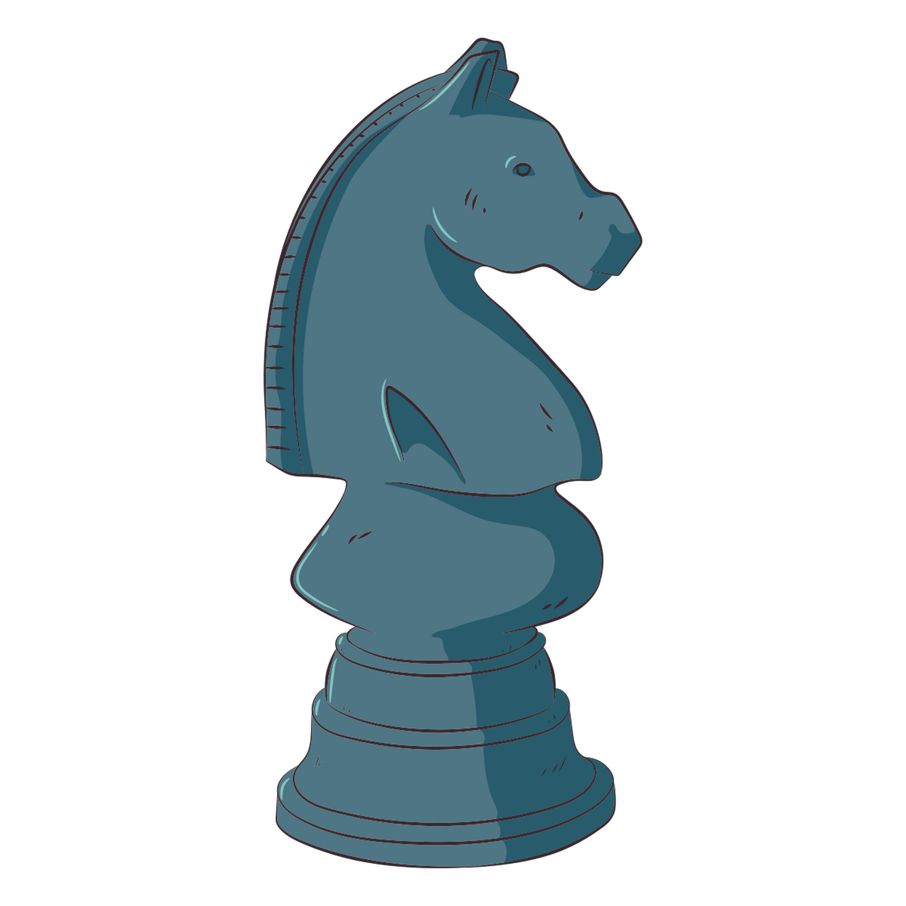
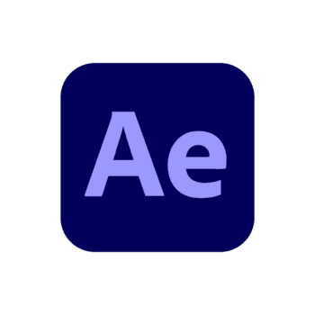
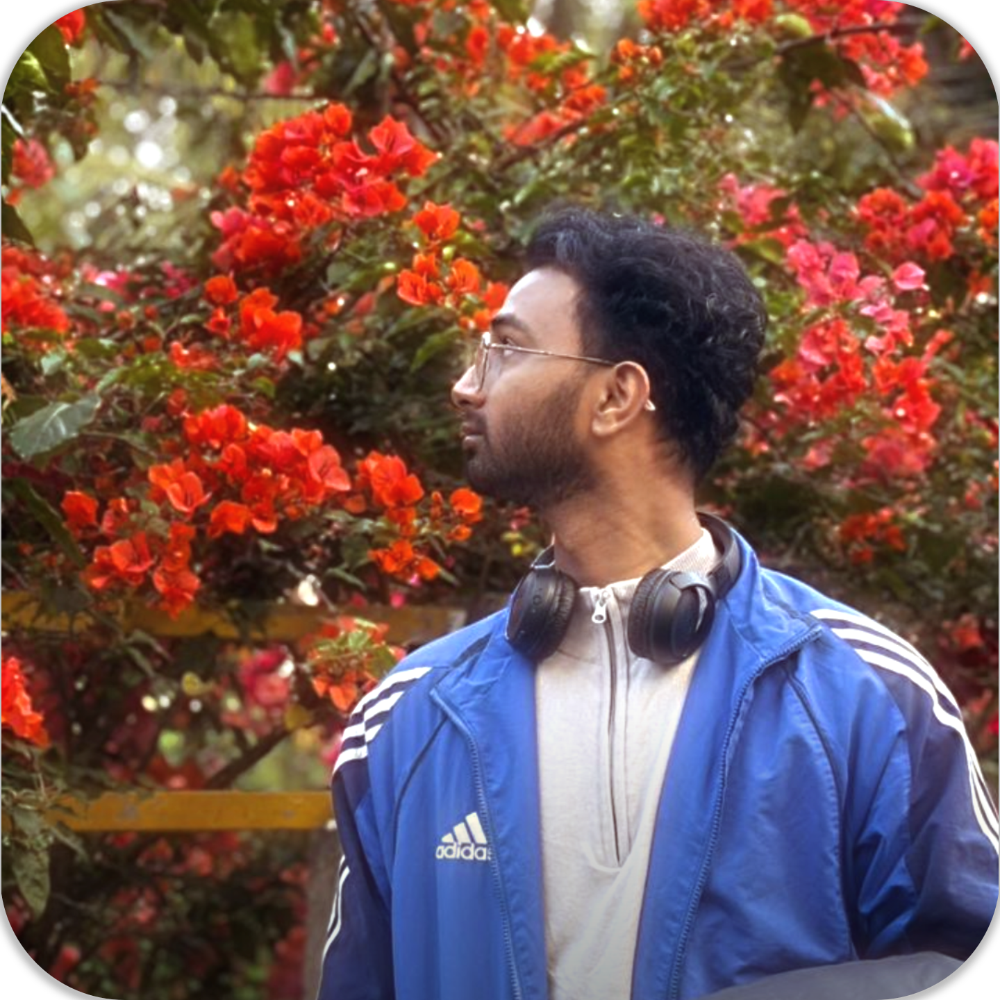

hey ya'll, Danish here!





About Me
I am a dedicated and self-motivated learner with a strong interest in building structured, efficient, and purposeful digital experiences. Rather than relying on shortcuts, I focus on developing a clear understanding of underlying concepts and applying them thoughtfully. I value clean architecture, logical flow, and user interfaces that communicate effectively through simplicity and precision.
My ambition is to grow into a well-rounded software developer capable of designing scalable, reliable, and maintainable systems. I approach programming as a long-term discipline rather than a short-term skill, with an emphasis on mastering fundamentals that support consistent growth. Beyond development, I engage in activities such as gaming and sports, which reinforce strategic thinking, adaptability, and focus. My long-term goal is to build a career centered on continuous learning, meaningful problem-solving, and professional independence while contributing value through well-crafted technology.
My Journey
College Dropout — Reset Point. After finishing my highschool in Cs. I stepped away from college after realizing the path I was on didn’t align with how I learn or what I wanted to build. Instead of forcing momentum, I chose clarity and self-direction.
Self-Learning Phase. I began learning web development independently, starting with HTML and CSS, focusing on structure, layout, and understanding how the web works at a fundamental level.
Consistency Over Shortcuts. Rather than jumping between technologies, I spent time building UI layouts and recreating real websites, strengthening fundamentals and visual discipline.
JavaScript Foundation. I moved into JavaScript with an emphasis on logic, loops, arrays, conditions, and DOM basics, intentionally avoiding frameworks early to build a strong problem-solving base.
Present Focus. Today, I am deepening my JavaScript and DOM skills, aiming to build scalable, maintainable interfaces while staying grounded in fundamentals rather than trends.
I treat learning as a long-term discipline, not a shortcut-driven race.
Featured Projects
Goibibo UI Clone
A responsive UI clone inspired by Goibibo, focusing on layout accuracy, spacing discipline, and component hierarchy using HTML, CSS, and Bootstrap.
Instagram Video Editing Page
A high-impact landing page designed for short-form video editing services. Emphasis on visual flow, typography rhythm, and creator-focused storytelling.
Personal Portfolio Website
A custom-built portfolio showcasing projects, skills, and personal journey with a focus on clean structure, animation restraint, and scalability.
Skills & Tech Stack
HTML5
Semantic structure, accessibility, clean markup.
CSS3
Layouts, animations, responsive design.
Bootstrap
Grid system, components, rapid UI building.
JavaScript
Logic, events, basics & DOM manipulation.
Expertise
Communication
Clear articulation of ideas, teamwork collaboration, and confident presentation skills.
Video Editing
Short-form edits, motion effects, pacing, and visual storytelling.
Photoshop
Image manipulation, retouching, compositing, and color correction.
Poster Design
Clean layouts, typography balance, and high-impact visual branding.
Let's Connect
I'm always open for collaborations, ideas, or a friendly chat!
hey there!
You’ve reached the end… or maybe the beginning of something great? Let’s talk and make it happen